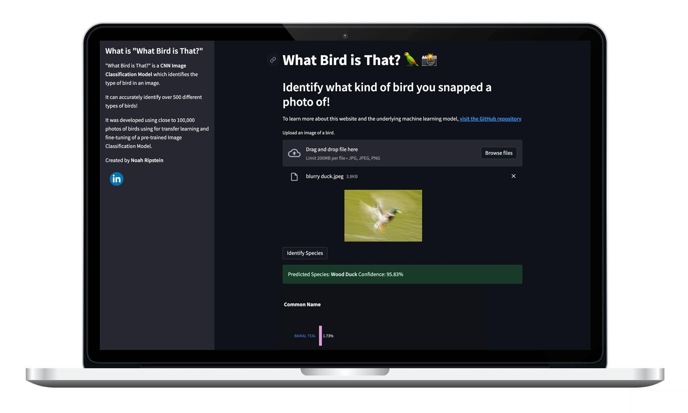

Project Overview
This project aims to classify bird species using deep learning. Users can upload a photo of a bird, and the website will predict the species. The website then displays some information about the bird, which is pulled from the Wikipedia API. The model can identify over 500 species of bird with 97+% accuracy. The Bird Classifier leverages feature extraction and fine-tuning of the EfficientNetB4 model, pre-trained on the ImageNet dataset, to accurately identify and provide information about various bird species.
Deep Learning Model Design
Data augmentation: Data augmentation is a powerful technique employed to increase the diversity and variability of the training dataset. The augmentation techniques employed include random horizontal flipping, random height and width shifting, random zooming, random rotation, and random contrast adjustment. By randomly applying these operations to each image the model learns from during training, the model becomes more resilient to variations in bird pose, lighting conditions, and other factors. This augmentation process enhances the model's ability to generalize well and accurately classify bird species under different circumstances.
Feature extraction with EfficientNet: Transfer learning is employed to leverage the knowledge gained from the extensive training on the large-scale ImageNet dataset. The EfficientNet architecture, known for its excellent performance and low training time in image classification tasks, serves as the backbone of the model. Feature extraction uses this backbone model architecture and weights, but adds a few layers which are trained on the bird image dataset.
Fine-tuning the model: After training the new layers during feature extraction, the weights of the last 10 layers of the EfficientNet model are unfrozen and trained on the bird images for an additional 5 epochs (with a reduced learning rate). This keeps most of learned features within those layers the same, but slightly adjusts them to perform better at classifying birds specifically.
Performance on Unseen Test Data:
| Accuracy | 97.83% |
| Precision | 98.19% |
| Recall | 97.82% |
| F1 Score | 97.79% |
In addition to the quantitative evaluation from the test dataset, I also conducted a number of tests using photos from the internet, and photos I took myself, with excellent results. I was pleased to see that the website is even effective with blurry photos, like this one of a Wood Duck.

Streamlit Website Deployment
To provide a user-friendly interface for bird classification, I developed a Streamlit web application. Users can easily upload their bird photos and obtain predictions from the trained Bird Classifier model. The website presents a bar plot of the probability of the top 3 species (with their labels serving as Wikipedia links). After identifying the top prediction, the website presents a photo of the bird from the test dataset and provides details about the recognized species (from the Wikipedia API).
Data
The bird dataset used in this project comprises a wide range of bird species. It includes 525 different species, enabling the model to accurately identify and classify a diverse range of birds. Below are some sample photos from the dataset.
| Scarlet Macaw | Bald Eagle | Blue Dacnis |